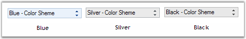
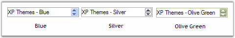
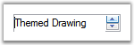
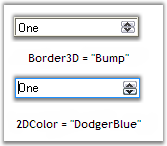

The text for the DomainUpDownExt control can be specified in String Collection Editor. This section discusses the properties which deals with this text.
|
DomainUpDownExt Property |
Description |
|
Items |
Invokes String Collection Editor. Text for the control can be specified in this editor. |
|
TextAlign |
Specifies the alignment of the text in the text field. |
|
MaxLength |
Indicates the maximum length of the text that can be entered into the editable portion of the control. Default value is 32767. |
|
[C#]
this.domainUpDownExt2.Items.Add("Six"); this.domainUpDownExt1.TextAlign = System.Windows.Forms.HorizontalAlignment.Right; this.domainUpDownExt2.MaxLength = 32768; |
|
[VB.NET]
Me.domainUpDownExt2.Items.Add("Six") Me.domainUpDownExt1.TextAlign = System.Windows.Forms.HorizontalAlignment.Right Me.domainUpDownExt2.MaxLength = 32768 |
Figure 444: Items = " Six"; TextAlign = "Right"
This section will discuss the properties which controls the alignment and orientation of the spin button in a DomainUpDownExt control.
Figure 445: SpinButton in a DomainUpDownExt Control
Orientation
The spin button orientation can be changed to vertical or horizontal using the SpinOrientation property.
|
[C#]
//Spin button will be oriented horizontally. this.domainUpDownExt1.SpinOrientation = Orientation.Horizontal; //Spin button will be oriented vertically. this.domainUpDownExt1.SpinOrientation = Orientation.Vertical; |
|
[VB]
'SpinButton will be oriented horizontally. Me.domainUpDownExt1.SpinOrientation = Orientation.Horizontal 'SpinButton will be oriented vertically. Me.domainUpDownExt1.SpinOrientation = Orientation.Vertical |
Figure 446: SpinButton Orientation = Horizontal and Vertical
Alignment
The spin button alignment can be set through UpDownAlign property. By default it is set to right.
|
[C#]
this.domainUpDownExt1.UpDownAlign = LeftRightAlignment.Left; |
|
[VB]
Me.domainUpDownExt1.UpDownAlign = LeftRightAlignment.Left |
Figure 447: UpDownAlign = "Left"
3.3.8.2.3.2.1 Keyboard Support
Using Up and Down arrow keys we can increment and decrement the value of DomainUpDownExt control by settingInterceptArrowKeys to true.
|
DomainUpDownExt Property |
Description |
|
InterceptArrowKeys |
Specifies whether the up down control will increment and decrement when Up Arrow and Down Arrow keys are pressed. |
|
[C#]
this.domainUpDownExt1.InterceptArrowKeys = true; |
|
[VB.NET]
Private Me.domainUpDownExt1.InterceptArrowKeys = True |
DomainUpDownExt supports Office2007 visual style with all three color schemes.
|
[C#]
//sets the Office2007 Visual Style. this.domainUpDownExt1.VisualStyle = Syncfusion.Windows.Forms.VisualStyle.Office2007; //To set Blue Color scheme. this.domainUpDownExt1.ColorScheme = Syncfusion.Windows.Forms.Office2007Theme.Blue; //To set Silver Color scheme. this.domainUpDownExt1.ColorScheme = Syncfusion.Windows.Forms.Office2007Theme.Silver; //To set Black Color scheme. this.domainUpDownExt1.ColorScheme = Syncfusion.Windows.Forms.Office2007Theme.Black; |
|
[VB]
'Sets the Office2007 Visual Style. Me.domainUpDownExt1.VisualStyle = Syncfusion.Windows.Forms.VisualStyle.Office2007 'To set Blue Color scheme. Me.domainUpDownExt1.ColorScheme = Syncfusion.Windows.Forms.Office2007Theme.Blue 'To set Silver Color scheme. Me.domainUpDownExt1.ColorScheme = Syncfusion.Windows.Forms.Office2007Theme.Silver 'To set Black Color scheme. Me.domainUpDownExt1.ColorScheme = Syncfusion.Windows.Forms.Office2007Theme.Black |

Figure 448: DomainUpDownExt Office 2007 Themes
It also provides support for XP Themes look and feel.
|
[C#]
//Enable Themes. this.domainUpDownExt1.ThemesEnabled = true; |
|
[VB]
'Enable Themes. Me.domainUpDownExt1.ThemesEnabled = True |

Figure 449: DomainUpDownExt XP Themes

Figure 450: DomainUpDownExt Vista Theme
Custom Colors
We can also apply custom colors to the DomainUpDownExt control by setting ColorScheme to "Managed" and specifying the custom color through the ApplyManagedColors method as follows.
|
[C#]
this.domainUpDownExt1.ColorScheme = Syncfusion.Windows.Forms.Office2007Theme.Managed; Office2007Colors.ApplyManagedColors(this, Color.Orange); |
|
[VB.NET]
Me.domainUpDownExt1.ColorScheme = Syncfusion.Windows.Forms.Office2007Theme.Managed; Office2007Colors.ApplyManagedColors(Me, Color.Orange) |
Figure 451: Custom Color = "Orange"
This section discusses the border styles and back color that can be applied for DomainUpDownExt control.
The below table lists the appearance properties of DomainUpDownExt control.
|
DomainUpDownExt Properties |
Description |
|
BorderStyle |
Specifies the border style for the control. The options includes
FixedSingle, Fixed3D, and None. |
|
Border3DStyle |
Specifies the 3D BorderStyle for the control when BorderStyle = Fixed3D. The options are,
RaisedInner, RaisedOuter, Raised, Sunken (default), SunkenInner, SunkenOuter, Flat, Bump and Adjust. |
|
BorderSides |
Specifies the sides of the control which can have border. The options are,
Left, Top, Right, Bottom, Middle and All (default). |
|
BorderColor |
Specifies the color for 2D border. The default color is 'black'. |
|
ThemedBorder |
Specifies whether to enable themes for the border around the control. ThemesEnabled must be set to 'True'. |
|
BackColor |
Specifies the back color for the control. |
|
[C#]
this.domainUpDownExt1.BorderStyle = System.Windows.Forms.BorderStyle.FixedSingle; this.domainUpDownExt1.Border3DStyle = System.Windows.Forms.Border3DStyle.Bump; this.domainUpDownExt1.BorderSides = System.Windows.Forms.Border3DSide.Right; this.domainUpDownExt1.BorderColor = System.Drawing.Color.DodgerBlue; this.domainUpDownExt1.BackColor = System.Drawing.Color.AntiqueWhite; |
|
[VB.NET]
Me.domainUpDownExt1.BorderStyle = System.Windows.Forms.BorderStyle.FixedSingle Me.domainUpDownExt1.Border3DStyle = System.Windows.Forms.Border3DStyle.Bump Me.domainUpDownExt1.BorderSides = System.Windows.Forms.Border3DSide.Right Me.domainUpDownExt1.BorderColor = System.Drawing.Color.DodgerBlue Me.domainUpDownExt1.BackColor = System.Drawing.Color.AntiqueWhite |

Figure 452: DomainUpDownExt Control with Border Settings
Figure 453: BackColor = "AntiqueWhite"